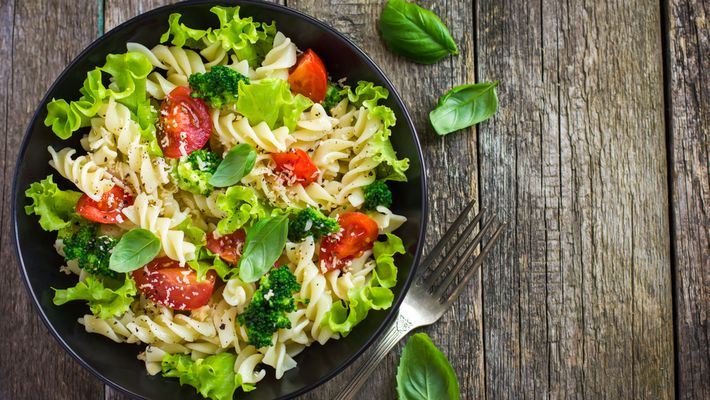

SALADA DE MACARRÃO COM ATUM

Ingredientes:
• 250 g de macarrão parafuso
• 1/2 cebola bem picadinha
• 2 tomates sem sementes cortados em cubinhos
• 1 lata de milho verde
• 2 latas de atum ralado sem o óleo da conserva
• 2 colheres (sopa) de mostarda
• 1 xícara de maionese
• sal, pimenta-do-reino e cheiro verde a gosto
Modo de Preparo:
1. Em uma panela ferva a água para cozinhar o macarrão.
2. Cozinhe da forma tradicional deixando o macarrão al dente.
3. Enquanto isso prepare a mistura para temperar o macarrão.
4. Coloque em uma vasilha grande as 2 latas de atum, a cebola, os tomates, o milho, a maionese, a mostarda, sal, pimenta do reino e o cheiro verde.
5. Cuidadosamente misture bem.
6. Depois que o macarrão estiver cozido, colque em um refratário e adicione a mistura mexendo levemente para não quebrar o macarrão.
7. Quando a mistura estiver bem incorporada ao macarrão leve para a geladeira por no mínimo 1 hora e meia.
8. Eu prefiro fazer com de um dia para o outro,pois o sabor fica bem mais apurado.
9. Sirva como prato principal em dias quentes acompanhado de um frango grelhado.
VOLTAR